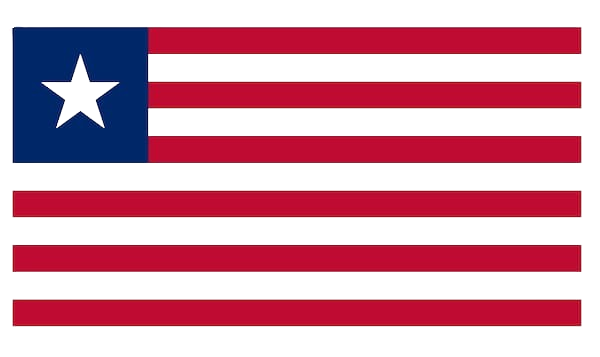

Historic significance
A capital connected to Africa’s long journey toward freedom, sovereignty, and unity.
Host country
A historic symbol of African freedom and a fitting home for a continental summit focused on unity, peace, and progress.

A Pan-African legacy
Liberia stands as one of Africa’s oldest republics and a historic pillar of the Pan-African movement. Its support for African unity and the formation of the Organization of African Unity—now the African Union—gives the country a meaningful place in the continent’s diplomatic history.
Hosting the Africa Unification Summit 2026 allows Liberia to reaffirm its legacy as a champion of continental cooperation, peace, investment, and shared development.
Why Monrovia
A capital connected to Africa’s long journey toward freedom, sovereignty, and unity.
A setting for governments, institutions, investors, and the diaspora to engage.
A welcoming destination where partnerships meet Liberia’s people, heritage, and potential.
November 16–20, 2026
Five days of high-level dialogue, investment connections, innovation, culture, and African partnership.
Apply to attend